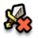
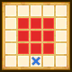
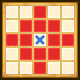

| Lv: | 150 |
|---|---|
| HP: | |
| MP: | |
| ATK: | |
| DEF: | |
| AGL: | |
| WIS: | |
| Move: | |
| Weight: | 60 |
| Weaknesses: |  |
 |
/ |  |
 |
|---|---|---|---|---|---|
| Resistances: |  |
 |
/ |  |
 |
| Immunities: |  |
| Family: |  |
Role: |  |
Element: |  |
|---|
Note: All perks/abilities denoted with an * are using unofficial translations
| 1st Action Abilities | ||||||
|---|---|---|---|---|---|---|
| Level | Type | Name | MP | Element | Range | Description |
| 1 |  |
Opening Time Prep* 開店準備 |
28 |  |
 Self |
Raises the user's AGL, physical and martial potency/recovery for 3 turns |
| 33 |  |
Heated Flail of Destruction* 破壊の熱てっきゅう |
111 |  |
 Front |
Deals major Sizz-type physical damage (330% potency) to all enemies in area of effect, often lowers DEF for 3 turns |
| 52 | |
Astraea's Abacus | 98 | |
1-3 |
Applies Locked-On to 1 enemy for 3 turns, with this effect bypassing reflecting status changes, then deals major unreflectable physical damage (410% potency) to 1 enemy |
| 80 | Golden Oldies | 128 | |
 Front |
Deals major martial damage proportional to ATK to all enemies in area of effect 6 times Turns needed: 2 (Times usable: 2) |
|
| 2nd Action Abilities | ||||||
|---|---|---|---|---|---|---|
| Level | Type | Name | MP | Element | Range | Description |
| 1 | Closing Time Prep* 閉店準備 |
28 | |
Self |
Raises the user's physical and martial potency/recovery, and reduces damage taken by 20% for 3 turns Can only be used on 2nd action |
|
| 10 | Tessie's Packed Lunch* ネネのおべんとう |
48 | |
1-2 (incl. self) |
Heals a major amount of HP for 1 ally Can only be used on 2nd action |
|
| 20 |  |
Freezing Puns* こごえるダジャレ |
100 |  |
 Rhombus |
Deals major Crack-type martial damage proportional to ATK to all enemies in area of effect, occasionally stuns Can only be used on 2nd action |
| 30 |  |
Gone an' tripped up again!* つまずいてころんだ！ |
40 | |
1-2 |
Deals minor physical damage (110% potency) to 1 enemy, always results in a critical hit Can only be used on 2nd action |
| Base Perks | ||
|---|---|---|
| Level | Name | Description |
| 1 | Max HP +30 | Raises max HP by 30 |
| 1 | Max MP +15 | Raises max MP by 15 |
| 1 | Legendary Merchant* 伝説の商人 |
Performs 2 actions in one turn Abilities switch on the 2nd action |
| 1 | Marketer's Power Shield* ちからのたて・商 |
Heals 50% of max HP when the user's HP drops to 70% or less, up to 2 times per battle This perk can be triggered when the attack is from an ally |
| 110, 120, 130, 140 | Physical Potency/Recovery +2% | Raises physical potency/recovery by 2% |
| 110, 120, 130, 140 | Martial Potency/Recovery +2% | Raises martial potency/recovery by 2% |
| 150 | Ability Potency/Recovery +2% | Raises ability potency/recovery by 2% |
| Awakening Perks | ||
|---|---|---|
| Awakening | Name | Description |
| 1 | Quest for the Legendary Weapon* 伝説の武器を求めて |
Battle start: Raises Move for 3 turns Action start on odd turns until turn 10: Raises ATK, DEF, and AGL for 3 turns, removes some status ailments |
| 2 | Zam Res +25 | Raises Zam resistance by 25 |
| 3 | Protective Robes* まもりのころも |
Battle start, action start, or when revived: Reduces damage taken by 30% if the user's HP is 50% or over |
| 3, 5 | Physical Potency/Recovery +5% | Raises physical potency/recovery by 5% |
| 3, 5 | Martial Potency/Recovery +5% | Raises martial potency/recovery by 5% |
| 4 | Frizz Res +25 | Raises Frizz resistance by 25 |
| 5 | Instant Oomph | Battle start: Greatly raises ATK for 3 turns |
| 1, 2, 3, 4, 5 | Stats Up | Raises HP, MP, ATK, DEF, WIS and AGL by 5% |